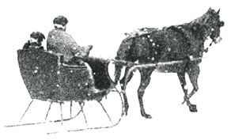
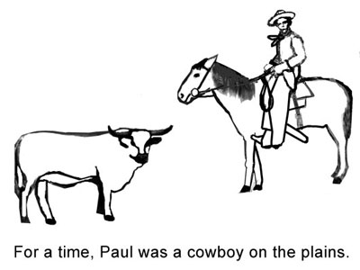

Paul Harris for Children
Excerpted from the book Paul Harris Grow Up!
written and illustrated by Irene Herz
Paul Harris' Childhood
"Knee high to a grasshopper and weighing four pounds less than a straw hat." That was how the hired man described Paul Harris when he met him. Paul was three years old. Up until then, he had lived with his parents. But they could not afford to keep him. So Paul's father brought him to the town of Wallingford in Vermont. "You will live with your grandparents now, on their farm, Paul’s father told him.
When they got to the farm, Paul was tired. A strange lady called “Grandmother” tried to put him to bed, Paul yelled at her. “You are not my mamma and I won’t mind you,” he cried. “This is your grandmamma,” his father told him. "You must listen to her." Paul never did get to be a good listener. But he learned to love his grandmamma.
One day, just a few years after he’d settled into his new life, Paul met a lady coming from the train station. Paul did not know who this strange lady was. He thought she looked very grand in her fine clothes.
"Paul," she told him, "I am your mamma." It was the first time Paul had seen her in years. He did not even know who she was. But here she was in Wallingford. She had come to take him home to live with her and his papa.
Paul's mamma tried to be a good mother to Paul and his five brothers and sisters. She gave music lessons to try to earn enough to feed and clothe them.
But how sad they all were! They were hungry and cold. Despite their fine clothes, Paul's mamma and papa could not earn enough money to feed them or buy coal to heat their home.
On a cold dark night, Paul’s mamma tucked him into a horse drawn sleigh with a bearded stranger. The stranger drove him to a train that took him back to his grandparents’ farm. There he would not see his parents or his little sisters and brothers, but he had enough to eat and a warm straw mattress to sleep on.
Flunking Out
Paul's grandparents were not rich but his grandfather thought it was very important to get a good education. So after Paul graduated from the local high school, his grandfather sent him to Black River Academy in Ludlow. Some of Mr. Harris' neighbors told him Paul was just a rapscallion and would never amount to anything, but Paul's grandfather had faith in him.
Mr. Harris needed that faith. It was sorely tested, because Paul got kicked out of the Academy for pulling pranks! Then Paul went to the University of Vermont. But guess what? He got kicked out of that school too!
Wandering
After college, Paul decided to go off to see the world. He decided he wanted to be a cowboy. For months he rode the range all by himself, looking for stray cows. Then he went to Florida to pick oranges. For a time, he was an actor. It was only after five years of wandering that Paul decided to settle in Chicago and became a lawyer.
Paul was lonely in Chicago. One day in 1905, the thought came to him: "Why not have a sort of club where people in many occupations, of many faiths and opinions, could meet in fellowship and mutual helpfulness?"
And so, Rotary was born.
Rotary Today
Today, over one million Rotarians belong to more than 33,000 Rotary clubs in more than 200 countries.
What do Rotarians do? Every week or every month they meet in friendship. They come together to have a good time, to chat with other club members, and to hear interesting speakers. But Rotary’s real purpose is shown in its motto: Service Above Self.
Rotarians devote their time to service projects like building playgrounds and planting trees. They also spend their time – and their own money – trying to help people in other countries.
From boy to man
Paul Harris started life as a boy whose parents did not have enough money to feed him. He spent his teen years getting into mischief, and his twenties wandering aimlessly from state.
to state and country to country. At one point, he was ashamed to face the people from his home town. He was embarrassed because he had accomplished so little in his life.
And yet, this "rapscallion" eventually managed to found a worldwide organization. Paul Harris grew up.
The book Paul Harris Grow Up! can be purchased at www.paulharrischildrensbook.com, along with an accompanying coloring book. Both books are available at cost for literacy projects.